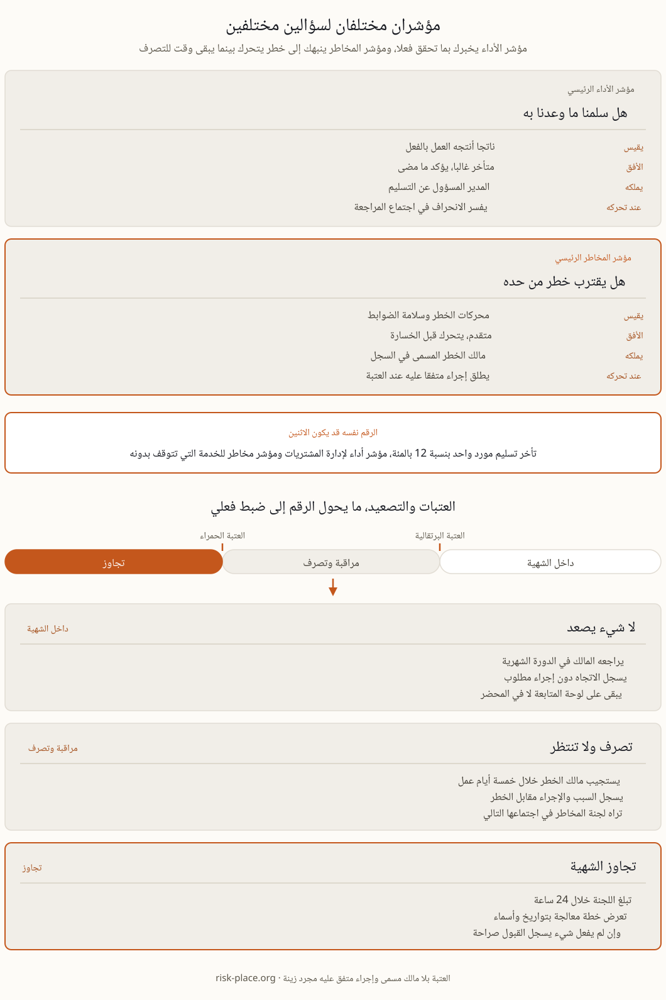

خذوا رقما واحدا، نسبة الطلبات المتأخرة من أكبر مورد لديكم. إذا عرض على مدير المشتريات مقابل هدف خدمة فهو مؤشر أداء. وإذا عرض مقابل خطر فقدان مدخل حيوي، مع مستوى يلزم عنده تأهيل مصدر بديل، فهو مؤشر مخاطر. ولم يتغير شيء في القياس نفسه. ثلاث صفات تحول الرقم إلى مؤشر مخاطر، أن يرتبط بخطر مسمى في سجل المخاطر، وأن تحدد له عتبة سلفا، وأن يلزم تجاوزها شخصا مسمى بالتصرف خلال مدة معلنة. والاختبار سؤال واحد، ماذا يحدث في اليوم الذي يعبر فيه هذا الرقم الخط؟ فإذا كانت الإجابة الصادقة أننا سنناقشه في الاجتماع المقبل فأنتم أمام مؤشر أداء يحمل طموحا. وهذا التمييز يستحق الجهد لأن النوعين يقرؤهما أشخاص مختلفون لأغراض مختلفة، وخلطهما ينتج تقارير طويلة ومطمئنة ومتأخرة.
افتحوا تقرير مخاطر نموذجيا وستجدون عدد الحوادث في الربع الماضي وساعات التوقف وملاحظات التدقيق المغلقة ونسبة إنجاز التدريب ونسبة الخطط المحدثة. كل واحد منها يقيس شيئا حقيقيا، ولا واحد منها ينذر. فهي تعد ما وقع بالفعل أو ما أنجز من نشاط، وحين تتحرك تكون الخسارة قد وقعت أو يكون التعرض لم يتغير أصلا. مرروا كل مرشح عبر ثلاثة أسئلة. هل يتحرك قبل الخسارة أم بعدها فقط، فعدد الحوادث لوحة نتائج لا إشارة إنذار. وهل له عتبة بعاقبة متفق عليها سلفا ومالك مسمى، أم مجرد خط اتجاه وتعليق؟ وهل تستطيعون تسمية الخطر الذي ينتمي إليه برقمه في السجل؟ والمؤشر الذي يسقط في أي من الثلاثة مكانه لوحة الأداء حيث قد يكون نافعا جدا. وإبقاؤه في تقرير المخاطر أسوأ من حذفه، لأنه يشغل الانتباه الذي كانت تحتاجه إشارة مبكرة حقيقية.

الاختيار الذي يقوده توافر البيانات ينتج مؤشرات لما يسهل استخراجه فقط. أما الاختيار الذي يقوده الخطر فيمر بأربع خطوات. خذوا خطرا جوهريا من السجل. واكتبوا سلسلته السببية في سطر واحد، محرك ثم ضابط ثم تعرض ثم أثر. واختاروا مؤشرين أو ثلاثة على المحركات وعلى سلامة الضوابط لا على النتيجة. وبعد ذلك فقط اسألوا أين تسكن البيانات، واقبلوا عدا يدويا شهريا بدل تغذية آلية تقيس الشيء الخطأ. ولمخاطر الاستمرارية والمرونة التشغيلية ثلاث عائلات مثمرة. التركز، أي حصة الحجم المار عبر موقع أو مسار أو مورد واحد، وعدد العمليات الحيوية التي يقوم عليها شخص مدرب واحد بلا بديل. وسلامة الضوابط، أي نسبة الخدمات المهمة التي اختبر تعافيها خلال اثني عشر شهرا، ومتوسط عمر ملاحظات التمارين غير المعالجة، ومعدل فشل التغييرات. والإجهاد المبكر، أي العمل الإضافي المستمر في فريق التشغيل، ونسب تأخر الموردين، وعمر الأنظمة غير المحدثة المكشوفة على الإنترنت، والعقود الحيوية التي تنتهي خلال تسعين يوما. ولاحظوا كم من أحد الإشارات يسكن خارج أنظمتكم، في تصنيف ائتماني لمورد أو مؤشر ازدحام لميناء، وهي عادة الإشارات التي لا يجمعها أحد.
من ثلاثة إلى خمسة مؤشرات لكل خطر جوهري تكفي. ومن خمسة عشر إلى خمسة وعشرين مؤشرا تصل إلى المجلس هي السقف العملي، وبعده لا يقرأ أحد الذيل. والوتيرة تتبع سرعة الخطر لا تقويم التقارير، فشهريا لمعظمها، وأسبوعيا أو يوميا لعدد صغير من الإشارات التشغيلية، وربعيا فقط حيث يتحرك المحرك ببطء حقيقي. ونقحوا القائمة مرة كل عام بقاعدة صريحة، المؤشر الذي لم يغير قرارا خلال أربعة وعشرين شهرا إما سيئ التصميم وإما مرتبط بخطر لم يعد مهما، فأصلحوا عتبته أو احذفوه. والمجموعة التي تنكمش وتحد سنها دليل موثوق على ارتفاع مستوى النضج، والمجموعة التي تنمو فقط تعني عادة أن أحدا لا يملك القائمة. وثمة انضباط إضافي يستحق الجهد، أن يسجل بجانب كل مؤشر تاريخ آخر مرة أطلق فيها إجراء. هذا العمود أصدق صفحة في تقرير المخاطر، وهو أول ما يبحث عنه عضو مجلس متمرس.
هناك ثلاث طرق يمكن الدفاع عنها لضبط العتبة، وأول سؤال من المجلس دائما أي واحدة استخدمتم. من التوزيع التاريخي، أي المستوى الذي تجاوزته أسوأ عشرة بالمئة من الأربعة والعشرين شهرا الماضية، وهو يخبركم كيف يبدو غير المعتاد لهذه العملية. ومن حد الطاقة أو الحد الهندسي، أي النقطة التي يتعذر بعدها التعافي ضمن الهدف المتفق عليه، وهو أقوى أساس حيثما وجد. ومن بيان الشهية، أي حد المجلس منزلا إلى العملية القادرة على كسره. واكتبوا الاشتقاق بجانب الرقم. ثم تحتاج كل عتبة إلى أربع صفات، مالك بالاسم، ومدة استجابة، وإجراء متفق عليه سلفا، وسجل لآخر تجاوز. العتبة البرتقالية تشتري انتباها، والحمراء تلزم بالتصعيد خلال ساعات لا في الاجتماع المجدول التالي. ويبقي التشخيصان التاليان المجموعة صادقة. العتبة التي لم تكسر خلال ثلاث سنوات موضوعة على الأرجح حيث لا يحدث شيء. والعتبة التي تكسر كل شهر ليست حدا بل بند موازنة قبلته المؤسسة بصمت.
المؤشرات بلا شهية تفاصيل بلا معنى، والشهية بلا مؤشرات بيان على الجدار. والصلة تعمل في الاتجاهين. حدود المجلس تتسلسل نزولا إلى حدود تحمل ثم سقوف ثم عتبات على لوحة متابعة الإدارة، والتجاوزات تصعد عبر البنية نفسها بمهل زمنية محددة. وإذا لم يتضمن بيان شهية المخاطر لديكم رقما واحدا يتابعه أي مؤشر في المؤسسة، فإحدى الوثيقتين زينة، وبناء هذا التسلسل مشروح في دليل تحديد شهية المخاطر والدفاع عنها. والتوصيل نفسه هو ما يتيح للخط الثاني أن يتحدى بالدليل لا بالرأي، وهنا تلتقي المؤشرات بنموذج الخطوط الثلاثة. وتصميم مجموعات المؤشرات وعتباتها ومسارات تصعيدها تغطيه الوحدة M2 من برنامج ERGP.
تصميم المؤشرات والعتبات ومسارات التصعيد هو الوحدة M2 من برنامج ERGP، أول شهادة في حوكمة المرونة متاحة بالكامل باللغة العربية وبالإنجليزية أيضا. ست وحدات وستة مخرجات عملية وشهادة قابلة للتحقق.
تعرفوا على برنامج ERGP